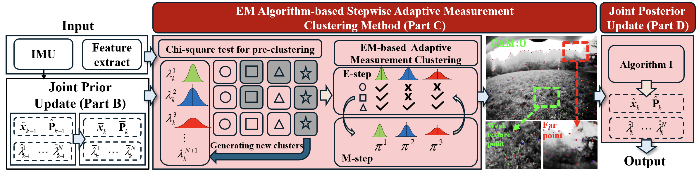
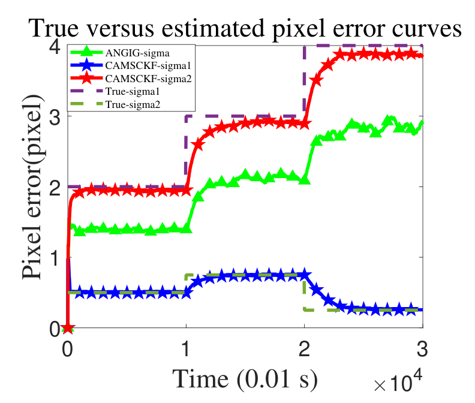
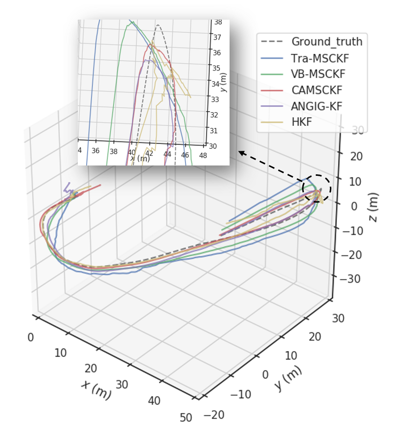

IROS 2025 · 视觉惯性里程计 · 共同贡献作者
CAMSCKF：自适应聚类与估计视觉测量噪声。
室外特征受距离、视角、光照与纹理影响，测量噪声既不均匀，也会随时间变化。CAMSCKF 在多状态约束卡尔曼滤波中，按测量新息自适应聚类，在线估计各簇噪声协方差，并联合更新视觉惯性状态。
Yiyang Tang* · Hanxuan Zhang* · Yichen Yu* · Xiaofeng Li · Yulong Huang†
01 · 方法
为不同测量分配不同的不确定性。
方法先以卡方检验预聚类，再通过基于 EM 的逐步过程分组测量。状态与噪声参数采用 Gaussian–Multivariate Generalized Inverse Gaussian 联合分布建模，解析后验更新同时调整状态估计与各簇噪声参数。

02 · 仿真
在异质、时变噪声下验证估计能力。
机器人在平面圆周运动并叠加竖直振荡，IMU 100 Hz、相机 10 Hz，每轮 300 秒，共 50 次 Monte Carlo。视觉测量包含两类时变高斯噪声，标称模型与实际噪声不匹配；与 Tra-MSCKF、VB-MSCKF、HKF 和 ANGIG-KF 比较位置与姿态误差。

03 · 实验结果
在四条 UZH-FPV 室外序列上比较轨迹与姿态误差。
各方法采用相同 KLT 前端、RANSAC 离群点剔除与 Sim(3) 轨迹对齐。下表为论文 Table II 的四序列平均值，运行时间仅对应论文实验设置。
| 方法 | ATE / m ↓ | AOE / ° ↓ |
|---|---|---|
| Tra-MSCKF | 1.914 | 4.138 |
| VB-MSCKF | 1.458 | 2.971 |
| HKF | 1.347 | 2.980 |
| ANGIG-KF | 1.457 | 2.578 |
| CAMSCKF | 0.978 | 1.658 |
ATE 为绝对轨迹误差，AOE 为绝对姿态误差。论文报告平均运行时间 7.2 ms。

论文与素材来源：CAMSCKF 原项目页。保留原作者顺序与署名，此页为中文研究介绍，结果属于论文共同成果。
← 返回科研项目